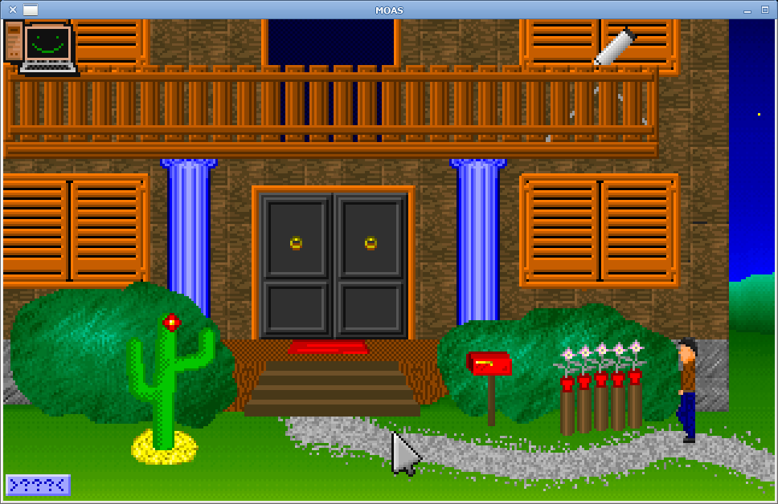

Point-and-click adventure · MOAS engine

Original 320×200, 256-colour software graphics, packaged as WebAssembly with Emscripten (ASYNCIFY) and the full game data preloaded. Built with Nix from the same source as the native ports.
Play Mänick Mänschion (WASM)Built from the same source as the browser version, version @version@.
moas.exe. Windows 7 and later. SDL2 included.
ports/PortMaster/autoinstall/ and start PortMaster, or unpack it to
/roms/ports/.
nix run github:Grumbel/moas)
or CMake and SDL2.
Mänick Mänschion is a German point-and-click adventure from the mid-1990s by Thomas Holz — a humorous, home-made parody of Maniac Mansion. It runs on the MOAS (Mouse Orientiertes Adventure System) engine, originally written for DOS (VGA Mode 13h, SoundBlaster). This site hosts the modern SDL2 port: same game logic, platform layer for video, input, timer and audio, with ports to Linux, Windows, Android, WebAssembly, R36S and a DOS rebuild.
Original release page: thomasholz.de/manick.htm.
On touch screens and the WASM build, an overlay provides Save, Load, USE and LOOK so the classic mouse workflow stays usable without a pointer.